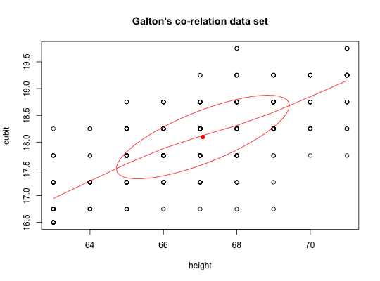
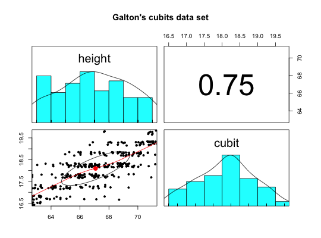

Galton's example of the relationship between height and 'cubit' or forearm length
Francis Galton introduced the 'co-relation' in 1888 with a paper discussing how to measure the relationship between two variables. His primary example was the relationship between height and forearm length. The data table (cubits) is taken from Galton (1888). Unfortunately, there seem to be some errors in the original data table in that the marginal totals do not match the table.
The data frame, heights, is converted from this table.
data(cubits)
Format
A data frame with 9 observations on the following 8 variables.
16.5Cubit length < 16.5
16.7516.5 <= Cubit length < 17.0
17.2517.0 <= Cubit length < 17.5
17.7517.5 <= Cubit length < 18.0
18.2518.0 <= Cubit length < 18.5
18.7518.5 <= Cubit length < 19.0
19.2519.0 <= Cubit length < 19.5
19.7519.5 <= Cubit length
Details
Sir Francis Galton (1888) published the first demonstration of the correlation coefficient. The regression (or reversion to mediocrity) of the height to the length of the left forearm (a cubit) was found to .8. There seem to be some errors in the table as published in that the row sums do not agree with the actual row sums. These data are used to create a matrix using table2matrix for demonstrations of analysis and displays of the data.
See also
table2matrix, table2df, ellipses, heights, peas,galton
Source
Galton (1888)
References
Galton, Francis (1888) Co-relations and their measurement. Proceedings of the Royal Society. London Series,45,135-145,
Examples
data(cubits) cubits#> 16.5 16.75 17.25 17.75 18.25 18.75 19.25 19.75 #> 71 0 0 0 1 3 4 15 7 #> 70 0 0 0 1 5 13 11 0 #> 69 0 1 1 2 25 15 6 0 #> 68 0 1 3 7 14 7 4 2 #> 67 0 1 7 15 28 8 2 0 #> 66 0 1 7 18 15 6 0 0 #> 65 0 4 10 12 8 2 0 0 #> 64 0 5 11 2 3 0 0 0 #> 63 9 12 10 3 1 0 0 0heights <- table2df(cubits,labs = c("height","cubit")) ellipses(heights,n=1,main="Galton's co-relation data set")ellipses(jitter(heights$height,3),jitter(heights$cubit,3),pch=".", main="Galton's co-relation data set",xlab="height", ylab="Forearm (cubit)") #add in some noise to see the points